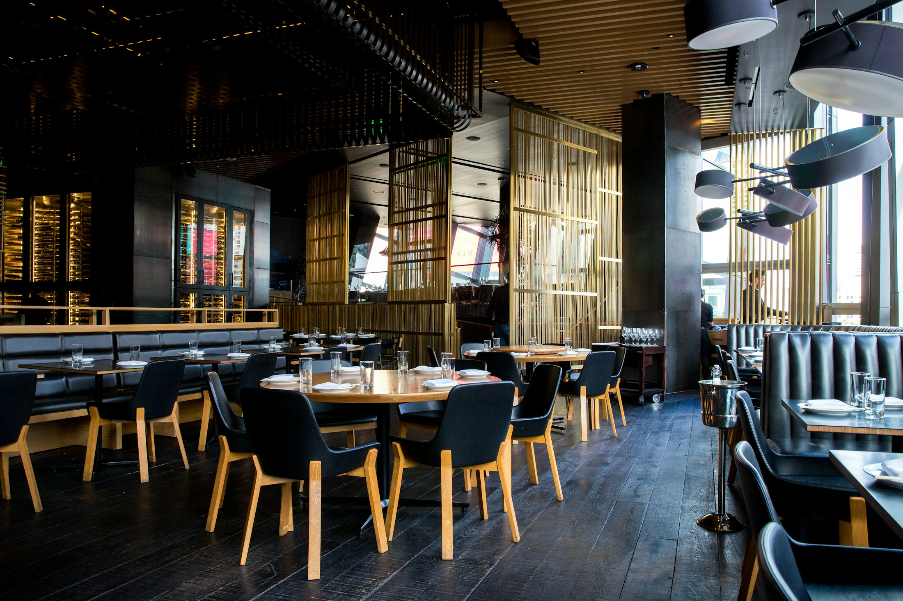

Banquet Focus
Event-ready spaces for premium celebrations.
From intimate receptions to full private dining buyouts, the venue is structured for reliable service, controlled atmosphere, and clean execution.
Elevated Dining in London
Experience a minimalist, modern dining destination built for reservations, curated menus, and high-value private events.

Banquet Focus
From intimate receptions to full private dining buyouts, the venue is structured for reliable service, controlled atmosphere, and clean execution.

Built to Convert
Navigation and calls-to-action are intentionally streamlined so guests can reserve, enquire, or review menus in seconds.
Direct route to online booking with clear date/time flow and enquiry capture.
Category filtering and price visibility designed for fast decision-making.
Dedicated banquet and catering pages with focused lead forms.
Launch Ready